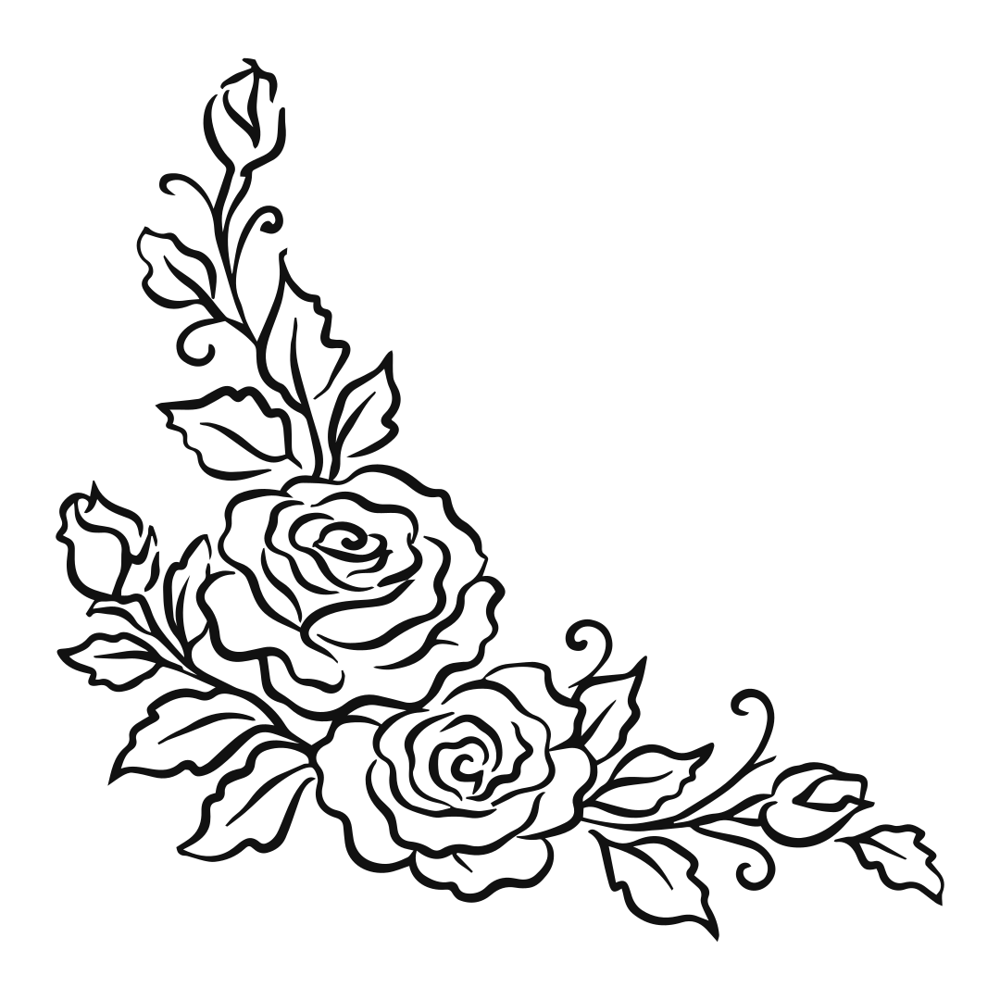
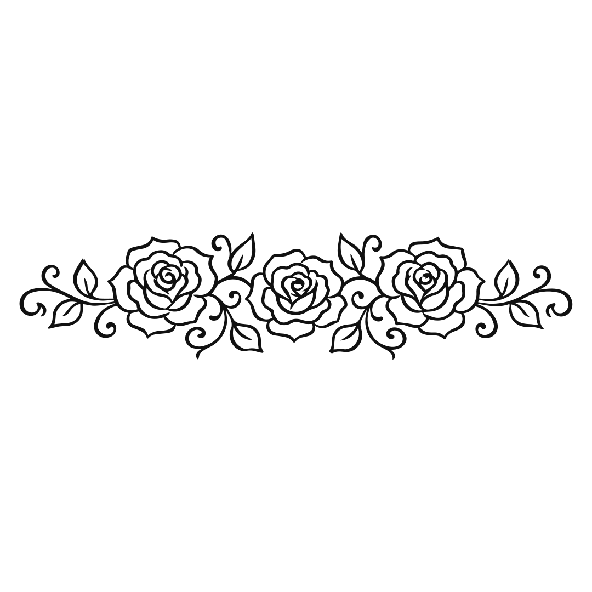
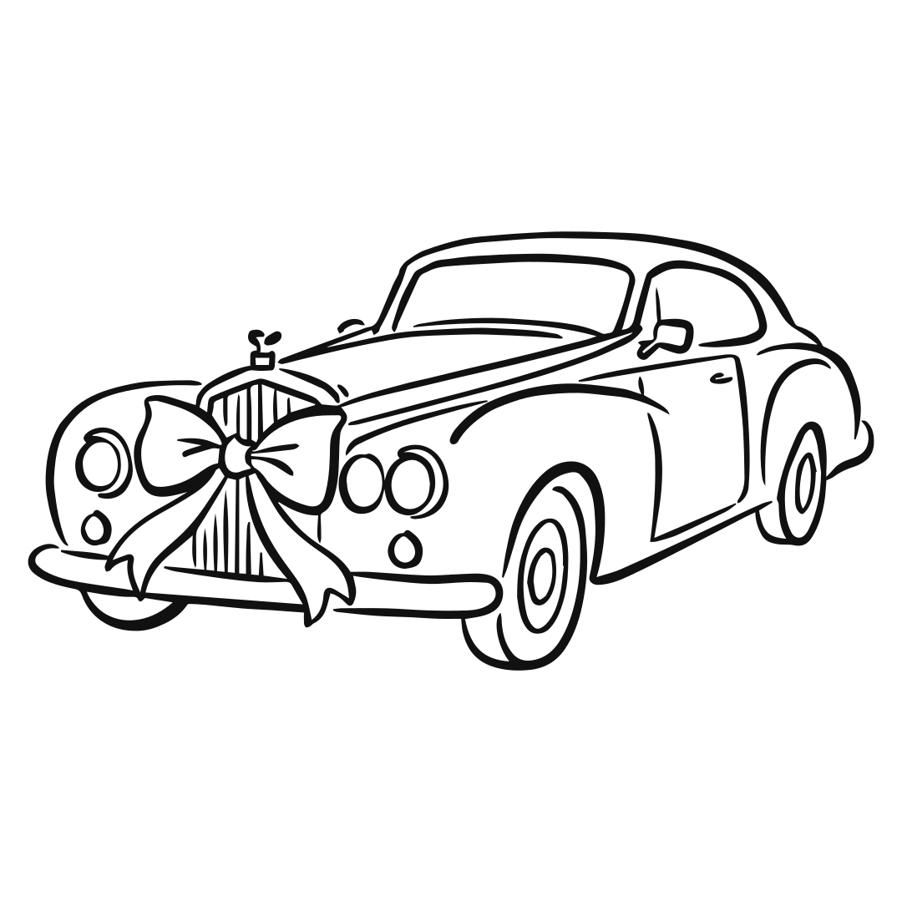
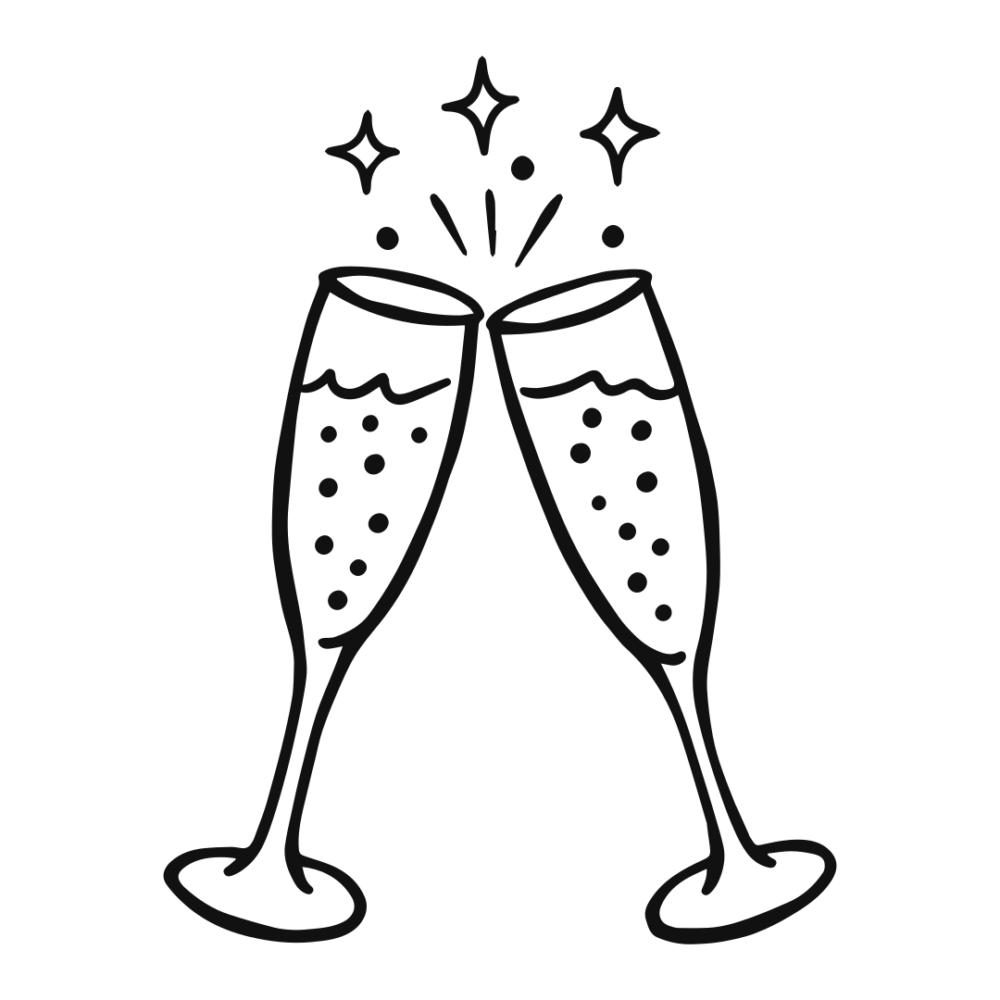
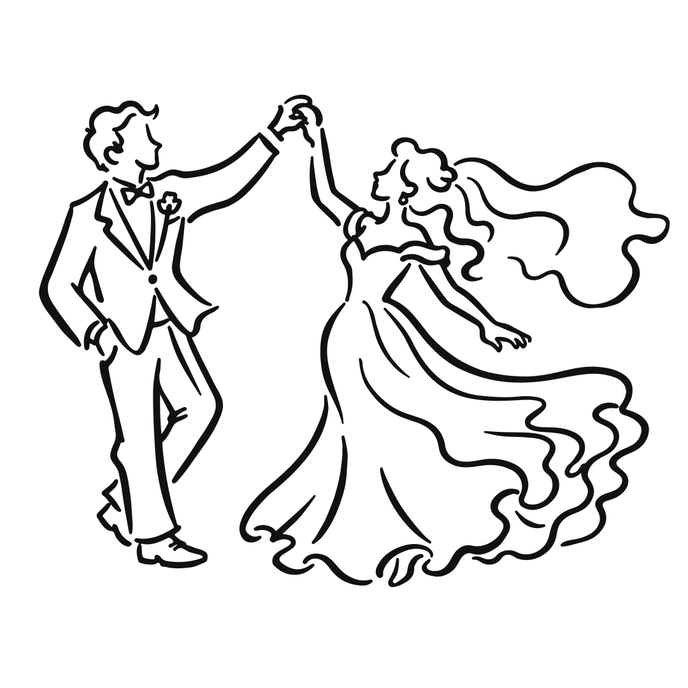
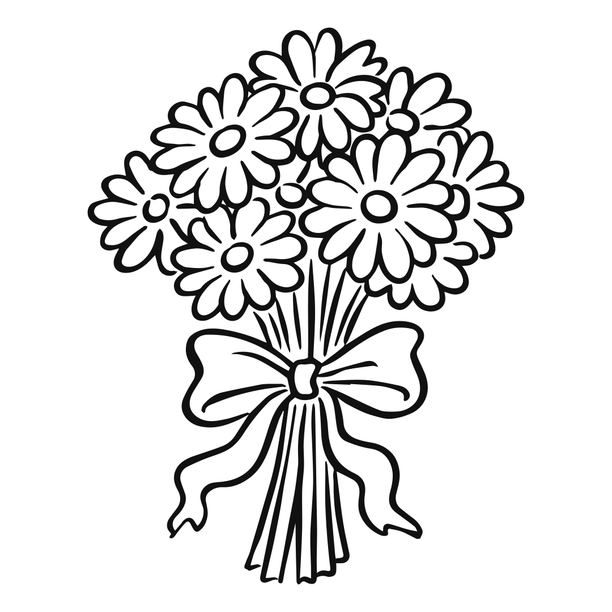

Barbora & Michal
29. 05. 2027
sobota · kostol v Hlinnom · Stodola Zlatník
Pozývame vás zdieľať s nami deň, na ktorý sa budeme pamätať celý život.
Chvíle nášho dňa

Jedna cesta, jeden deň: z kostola v Hlinnom do záhrady v Zlatníku. Časy doplníme, len čo budú isté.
Sobáš
Čas upresníme
Kostol v Hlinnom · názov upresníme
Obrad, pri ktorom si povieme svoje áno.

Cesta do Zlatníka
Po obrade
Hlinné → Stodola Zlatník
Z kostola sa presunieme do Zlatníka. Informácie o doprave a parkovaní doplníme.

Prípitok v záhrade
Čas upresníme
Stodola Zlatník · záhrada
Privítanie, gratulácie a prvý spoločný prípitok.

Večera
Čas upresníme
Stodola Zlatník · stodola
Spoločná večera pri jednom dlhom stole.

Prvý tanec
Čas upresníme
Stodola Zlatník
Otvoríme parket. Potom je rad na vás.

Torta
Čas upresníme
Stodola Zlatník
Sladká chvíľa pre všetkých.

Zábava do noci
Čas upresníme
Stodola Zlatník
Hudba, tanec a chvíle, ktoré si zapamätáme.


Farby nášho dňa
Volá sa Májová záhrada. Každá farba v nej má na svadbe svoje miesto. Ak sa chcete zladiť, budeme radi. Podmienka to nie je.
[Potvrdiť: dress code, či ide o odporúčanie pre hostí alebo len o farby výzdoby. Priradenia farieb k prvkom sú návrh.]
Šalviová
Zeleň záhrady a obrúsky na stoloch.
Pivonková
Kvety v kyticiach a na stoloch.
Marhuľová
Fasáda kostola v Hlinnom.
Masložltá
Májové slnko a lúčne kvety.
Prírodný ľan
Drevo stodoly a ľanové obrusy.
Slonovina
Papier pozvánok a menoviek.

Naše chvíle doteraz
Pár momentov z cesty, ktorá nás priviedla až sem.



Cesta domov môže počkať
Zábava potrvá do noci, a tak sme pre vás vybrali zopár miest na prespanie blízko stodoly. Ráno sa potom nikam neponáhľajte.
[Zoznam, vzdialenosti a kontakty doplníme a potvrdíme.]

Ráno bez ponáhľania.
Kedy mám prísť do kostola?
[Doplníme: odporúčaný príchod pred obradom.]
Kde zaparkujem?
[Doplníme: parkovanie pri kostole a pri stodole.]
Môžem prísť s deťmi?
[Doplníme.]
Čo si obliecť?
[Doplníme. Farby nájdete vyššie.]
Čo s darmi?
[Doplníme.]
Kam poslať fotky z oslavy?
[Doplníme: zdieľaný album.]


Prídete?
Dajte nám, prosím, vedieť do [dátum]. Potvrdenie zaberie minútu.
[Stránka RSVP: polia a cieľ odpovedí upresníme.]